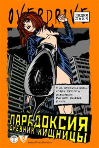

Лидия Ланч • Парадоксия: Дневник хищницы • Перевод: Татьяна Покидаева • overdrive • 20.03.2003

Это шокирующий автобиографический дневник Лидии Ланч – бродяги, воровки, проститутки и наркоманки, где она предпочитает описывать свои извращенные связи с подонками всех сортов. О пропорциях вымысла и реальности каждый будет догадываться самостоятельно. Но, как сказал в своем предисловии к книге Хьюберт Селби-младший, возможно, вам придется столкнуться лицом к лицу с некоторым аспектами собственной личности, которые остерегались исследовать, если вам хватит смелости прочитать книгу с открытым умом и сердцем.
Пресса
С.Соболев. Вспомнить есть что. Детям рассказать нечего: Рецензия на книгу Лидии Ланч «Парадоксия»
Небольшой такой роман о крайне озабоченной нимфоманке с дикими садисткими наклонностями, с всенепременным самокопанием между бесконечно сменяющимися случайными половыми партнерами и партнершами. Сексуальная маньячка рассказывает о двух десятилетиях своего “сексуального путешествия” (Нью-Йорк, Голливуд, Амстердам, Лондон, Новый Орлеан), о безудержной смене обстановки и разухабистых адреналиновых приключениях в духе “Автокатастрофы” Балларда-Кроненберга. Но – гораздо живее. И куда как более динамичнее – хотя и без должной глубины. Да и какая там на хрен “глубина” (кроме, ест-но, вагинальной) у полусбрендевшей вудуистской бабищи, если до уровня выпускника Гарварда Уильяма Берроуза или учившегося в Кембридже Дж.Г.Балларда ей как раком до Пекина?
На двух сотнях страниц действительно испробовано всё.
Перепробовав легкие наркотики. Любые мыслимые и немыслимые сочетания совокупления. Дойдя до смерти, магии и черного колдовства. Половые приключения юной дивчины описаны не слабо, запрет давать книгу детям (пропечатанный на обложке рядом с восклицательным знаком в желтом аптечном треугольничке) имеет не только рекламный смысл. Конечно, не тот шарм, что наблюдается у У.Берроуза, не тот искрометный юмор, что у Хантера С.Томпсона, но читать Лидию Ланч можно. Хотя бы для того, чтобы узнать, откуда идет панковская страсть к саморазрушению. Уж точно – не от деконструкции Деррида.
Евгений ИZ :: Рецензия на книгу Лидии Ланч «Парадоксия»
Когда-то, в моменты переживания непонятных и сложных молодежных чувств еще можно было послушать потусторонне-экспрессивные музыкальные упражнения легендарной Лидии Ланч. Можно было посмотреть на ее киноколдовство и поверить ее заявлению, что, между прочим, уважаемая публика, «Ружье заряжено». Можно было с ощущением далекого дежа-вю распознать ошметки ее шепота на сумасшедших нарезках электронного коллектива «Los Chikatillos». Все было можно…
Можно и теперь прочесть ее роман под названием «Парадоксия», но это будет неосторожностью. Потому что может быть плохо. Лидия Ланч, она вообще — плохая; она на стороне плохих, и проза ее написана уверенно, с высоты своего культово-светского статуса, но все-таки — плохо.
Чтобы оценить все достопримечательности погружения в мир «Парадоксии», роман этот лучше рассматривать в сравнении с другими известными книгами.
Прежде всего, поскольку Л. Ланч плоть от плоти движения «секс, наркотики и американский авангард», следует вспомнить главу соседнего культа, «гонзо-акулу пера» Хантера Томпсона и его «Страх и отвращение в Лас-Вегасе». В сравнении с этой книгой дневник Л. Ланч номинально можно было бы назвать «Трах и совращение в Нью-Йорке, Лос-Анджелесе и др.». Если «Страх и отвращение в Лас-Вегасе» — книга смешная, жизнелюбиво-веселая, поучительно-юморная и отвязная, то «Трах и совращение» — мрачная, психозно-серьезная, тоскливо-выматывающая и сковывающая.
По сути дела «Дневник хищницы» — это не совсем и дневник, скорее, избранное и сымитированное дневниковое повествование, а также не совсем хищницы — автор-героиня больше напоминает обиженного вампира, берущего какой-то свой внутренний реванш в привычной форме истерики декаданса 80-х. Парадокс этого текста состоит в том, что известная певица, актриса, перформансерша и тусовщица провоцирует читателя своим подчеркнуто откровенным садизмом и своей жестокостью только с тем, чтобы в предположительном итоге оказаться в роли жертвы, в мазохистской позиции, на BDSM-голгофе. То есть, никакого парадокса нет — тем же писательница Ланч занималась и в прочих своих сферах влияния.
Еще одна книга для сравнения — «Женщины» Чарлза Буковски. «Парадоксию» в этой связи можно было бы назвать «Мужчины», поскольку этот дневник состоит из хронологически последовательно расположенных мужских экспонатов, яростно и бесповоротно использованных вампирической хищницей. Мужики, мужчины, юноши и мальчики. Драматические отношения на ринге сексуальной свободы и моральной вседозволенности. Много пафоса, много «понта», много утрированной трагедии. Есть в этих ее «Мужчинах» что-то надуманное. Станиславский говорит: «не верю». А вот «Женщинам» Буковски — говорит «верю», поскольку они живее, естественнее, свободнее от умозрительных сверхзадач (в том числе и их автора).
История «Парадоксии» — это непрерывный негатив, который на свету портится, а в темной заперти ядовит; это история юной Л. Ланч, приехавшей в 14 лет в Нью-Йорк практически на улицу и затем 30 лет выживавшей под неласковым солнцем Америки, попутно накапливая коллекцию «охотничьих» трофеев психовампира. Это купированная автобиография, из которой ампутированы все упоминания о сцене, о великой волне индустриальной музыки и рок-авангарда, о звездных знакомых и звездных проектах. Вместо этого — проституция, воровство, алкоголизм, наркомания, извращения, аферы. Совершенно непонятно, откуда вдруг героиня дневника приобретает каких-то киношных знакомых в Европе, откуда вдруг обретает опыт и известность перформансиста и видеоартиста, так что даже оказывается приглашена преподавать в Институт искусств Сан-Франциско. Это, наверное, неинтересно и излишне по сравнению с серийными радостями анальной пенетрации и фриковыми фантазмами фанатки бондажа. То есть — Лидия Ланч в искусстве — тема не этой книги.
Кровососательная и душеизматывающая атмосфера книги, приправленная нарочитым цинизмом и брутальными натуральностями, целиком и полностью представляет Л. Ланч королевой «готов», возвышающейся на руинах самовзорванной культуры «индастриэла». Эта же атмосфера с ее скучно-пафосным настроем и отсутствием смешного даже в мелочах создает четкое ощущение исповеди душевнобольного. Всему этому произведению не на руку излишне «самостийный» и слишком уж «адаптированный» перевод Т. Покидаевой. Не на руку и поверхностная вычитка текста, когда, например, в превентивном слове А. Бухарина на первой же странице о Л. Ланч читаем: «ее неумная энергия сыграла большую роль в формировании…». Понятно, что энергии умной быть и не надо, ей достаточно просто быть, но осадок какой-то нехороший остается. Может, потому что Ланч действительно — пьет чужую энергию?
Цитировать «Парадоксию» не хочется. Больше всего мне запомнилась полезная и пригожая фраза об одном из самых безнадежных ее бой-френдов: «Как и всякий шарлатан, он обладал мощной харизмой».
Дневник уроженки Канзаса, пропитанной спиртным и психоделиками, страдающей «бешенством матки», кроме прочего проводит читателя по американским городам. — по пути спасения-бегства-избавления-обновления. Всюду своя неповторимая импрессия. Но настрой и тяга несчастной хищницы таковы, что Новый Орлеан ничуть не спасительнее Сан-Франциско, как хрен редьки не слаще. Ланч постоянно обнажает свой прием, свой ход конем перед читателем, но теперь, увы, ее вполне уемная энергия уже не играет большой роли в формировании… чего-либо. Теперь, и в это «теперь» мы включим конец 90-х, уже достаточно заметно, что людям такого полета, как у Л. Л. хочется лишь Покоя. Успокоения. Пусть и не в том понимании, о котором говорил А. С. Пушкин, пускай без Воли, но все-таки — успокоенности самими собой.
Поэтому мы, в том числе от имени потенциальных и несостоявшихся читателей писательницы Л. Ланч, искренне надеемся, что она нашла таки искомый Покой в своем родном Канзасе, где, кажется, и проживает ныне, оставив и Большое Яблоко, и Город Ангелов, и развратную старушку-Европу.